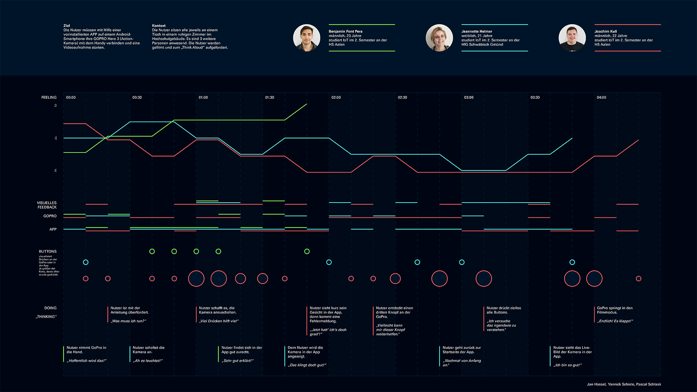

In my second design course we tried to understand the journey a user is making to understand a product. To understand the process of discovering a product, we observed different people at trying to understand applications and products in so called "user tests". To protocol the results and the behavior of all people, we designed a user journey map to visualize strengths and weaknesses while trying to solve our tasks.
In the following image you can see our final "user journey map".
User journey map of three participants
